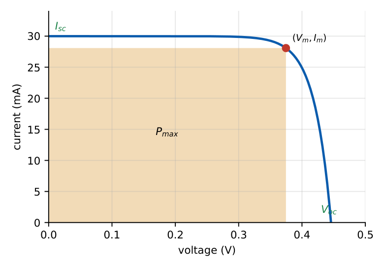

Special Semiconductor Diodes and Optoelectronic Devices
In this chapter
Zener regulator calculations, Schottky versus PN diode, varactor tuning, tunnel-diode negative resistance, photodiode responsivity, solar-cell \(V_{oc}\), fill factor and efficiency, LED wavelength.
5.1 Zener diode
A heavily doped PN junction designed to operate in reverse breakdown with a nearly constant voltage \(V_Z\). Parameters: \(V_Z\), knee current \(I_{Z,min}\), maximum power \(P_{Z,max}\) (so \(I_{Z,max}=P_{Z,max}/V_Z\)) and dynamic resistance \(r_z=\Delta V_Z/\Delta I_Z\) (a few ohms).
Series resistor current: \(I_R=\dfrac{V_{in}-V_Z}{R_s}=I_Z+I_L\).
Zener keeps regulating while \(I_{Z,min}\le I_Z\le I_{Z,max}\), i.e. \(I_L\) ranges from \(0\) to \(I_R-I_{Z,min}\).
Worst cases: \(R_s\le\dfrac{V_{in,min}-V_Z}{I_{Z,min}+I_{L,max}}\) and \(P_Z\le P_{Z,max}\) at \(V_{in,max}\), \(I_L=0\).
Output ripple \(\Delta V_o\approx\Delta V_{in}\,\dfrac{r_z}{R_s+r_z}\) (line regulation).
\(V_{in}=12\) V, \(R_s=220\,\Omega\), \(V_Z=5.1\) V, \(R_L=1\,\)k\(\Omega\). \(I_R=(12-5.1)/220=31.4\) mA, \(I_L=5.1\) mA, so \(I_Z=26.3\) mA, \(P_Z=134\) mW. If \(R_L\) is removed \(I_Z=31.4\) mA and \(P_Z=160\) mW (the worst case for power).
5.2 Schottky (metal–semiconductor) diode
A metal contact on lightly doped n-type silicon forms a rectifying barrier of height \(q\phi_B=q(\phi_M-\chi)\) (ideal Schottky–Mott rule). Conduction is by majority carriers only, so there is no minority-carrier storage and no diffusion capacitance.
\(I=I_s(e^{V/V_T}-1)\) with \(I_s=AA^*T^2e^{-q\phi_B/kT}\) (Richardson, thermionic emission); \(I_s\) is \(10^3\)–\(10^6\times\) larger than for a PN diode.
Forward drop \(\approx0.2\)–\(0.4\) V (vs \(0.6\)–\(0.7\) V); switching time in ps; used in fast rectifiers, clamps (Schottky-clamped TTL) and RF mixers.
An ohmic contact (heavy doping or low barrier) conducts in both directions with a linear I–V.
Reverse leakage is higher than in PN diodes and breakdown voltage lower (typically below 100 V).
5.3 Varactor (varicap) diode
A reverse-biased PN junction used as a voltage-controlled capacitor: \(C_j=C_{j0}/(1+V_R/V_{bi})^m\). Hyper-abrupt doping profiles raise \(m\) to \(\approx1\)–\(2\) to widen tuning range. Tuning ratio \(C(V_{min})/C(V_{max})\) is typically 3–10.
\(L=10\,\mu\)H with \(C\) varying \(40\to10\) pF: \(f=1/(2\pi\sqrt{LC})\) goes from \(7.96\) to \(15.9\) MHz, a tuning ratio of exactly \(2\) (since \(f\propto C^{-1/2}\) and \(C\) changes by \(4\)).
5.4 Tunnel (Esaki) diode
Both sides are degenerately doped (\(>10^{19}\) cm\({}^{-3}\)) with a very thin depletion region (\(<10\) nm). At small forward bias electrons tunnel through the barrier giving a current peak \(I_P\) at \(V_P\), then, as the bands un-overlap, the current falls (negative differential resistance) to a valley \(I_V\) at \(V_V\), then rises as an ordinary diode.
- Negative-resistance region: \(r_d=dV/dI<0\); used in microwave oscillators and amplifiers with an LC load.
- Very fast (tunnelling is fast), low power, low-voltage; insensitive to temperature.
- In reverse bias it conducts heavily (“backward diode”).
5.5 Photodiode
A reverse-biased PN or PIN junction. Photons with \(h\nu\ge E_g\) create pairs in or near the depletion region; the field sweeps them out producing a photocurrent \(I_{ph}\) proportional to optical power.
\(I=I_s(e^{V/V_T}-1)-I_{ph}\) (photocurrent adds to the reverse current).
Quantum efficiency \(\eta\) (carriers per photon); responsivity \(R=\dfrac{I_{ph}}{P_{opt}}=\dfrac{\eta q\lambda}{hc}=\dfrac{\eta\,\lambda(\mu\text{m})}{1.24}\ \text{A/W}\).
PIN: intrinsic layer widens the depletion region (more absorption, lower capacitance, higher speed). Avalanche photodiode (APD): internal gain \(M\).
Speed limits: transit time and the RC product; dark current limits the noise floor.
For \(\eta=0.8\) at \(\lambda=0.85\,\mu\)m: \(R=0.548\) A/W.
5.6 Solar cell (photovoltaic)
A large-area PN junction operated in the fourth quadrant (no bias source): the photo-generated current flows opposite to the forward diode current.

\(I=I_{ph}-I_s\left(e^{V/\eta V_T}-1\right)\); \(\ I_{sc}=I_{ph}\); \(\ V_{oc}=\eta V_T\ln\!\left(1+\dfrac{I_{ph}}{I_s}\right)\).
Fill factor \(FF=\dfrac{P_{max}}{V_{oc}I_{sc}}=\dfrac{V_mI_m}{V_{oc}I_{sc}}\) (typically 0.7–0.85).
Efficiency \(\eta_{cell}=\dfrac{P_{max}}{P_{in}}=\dfrac{FF\,V_{oc}I_{sc}}{P_{in}}\). Standard test: \(100\) mW/cm\({}^2\) (AM1.5).
\(V_{oc}\) grows logarithmically with illumination and falls with temperature (\(\approx-2\) mV/\({}^\circ\)C); \(I_{sc}\) is proportional to illumination.
\(I_{ph}=30\) mA, \(I_s=1\) nA: \(V_{oc}=0.0259\ln(3\times10^7)=0.446\) V.
\(I_{sc}=35\) mA/cm\({}^2\), \(V_{oc}=0.6\) V, \(FF=0.8\), \(A=1\) cm\({}^2\): \(P_{max}=16.8\) mW, \(\eta_{cell}=16.8\%\) under 100 mW/cm\({}^2\).
Wider-gap materials give higher \(V_{oc}\) but absorb less of the spectrum: the Shockley–Queisser limit gives a maximum \(\approx30\%\) at \(E_g\approx1.3\) eV for a single junction.
5.7 Light-emitting diode (LED) and laser diode
A forward-biased PN junction in a direct-gap material (GaAs, GaAsP, GaN, InGaN): injected carriers recombine radiatively with \(h\nu\approx E_g\). Wavelength \(\lambda=1.24/E_g\): GaAs \(0.87\,\mu\)m (IR), GaAsP red, GaP green, GaN/InGaN blue. A material with \(E_g=1.9\) eV emits \(0.653\,\mu\)m (red).
- Internal quantum efficiency: fraction of injected carriers recombining radiatively. External efficiency is lower because of total internal reflection (high refractive index). Spectral width \(\approx1.8kT/h\).
- Turn-on voltage \(\approx E_g/q\) (1.8–3.5 V). Current drives output; use a series resistor \(R=(V_s-V_F)/I_F\).
- Laser diode: LED with a cavity (cleaved facets) and population inversion above a threshold current; emits coherent, narrow-line light.
Silicon is indirect, so it is not used for LEDs. An optocoupler pairs an LED with a photodetector for isolation; the current transfer ratio \(CTR=I_C/I_F\).
(i) Zener regulates only in breakdown and needs \(I_Z\ge I_{Z,min}\). (ii) Schottky has no diffusion capacitance, so it switches fast; it does not have a higher forward drop. (iii) Photodiode is used in reverse bias; solar cell in no-bias power-generating mode. (iv) \(V_{oc}\) is logarithmic in light; \(I_{sc}\) is linear. (v) Negative resistance of a tunnel diode occurs in the forward valley region, not in reverse.
Zener: find \(I_R=(V_{in}-V_Z)/R_s\) first, subtract the load current for \(I_Z\). LED colour: \(\lambda(\mu\text{m})=1.24/E_g\). Solar cell: \(P_{max}=FF\cdot V_{oc}I_{sc}\). Photodiode: \(R=\eta\lambda/1.24\).
5.8 GATE problems
Q1. A Zener diode is operated in (A) forward bias (B) reverse breakdown (C) cutoff (D) saturation.
Q2. Which diode has no diffusion capacitance and fast switching? (A) PN (B) Zener (C) Schottky (D) PIN.
Q3. A tunnel diode exhibits (A) negative differential resistance (B) high reverse breakdown (C) constant voltage drop (D) minority-carrier storage.
Q4. Which material is suitable for an LED? (A) Si (B) Ge (C) GaAs (D) all of them.
Answers: Q1 (B). Q2 (C). Q3 (A). Q4 (C).
Q5. In the regulator \(V_{in}=12\) V, \(R_s=220\,\Omega\), \(V_Z=5.1\) V, \(R_L=1\,\)k\(\Omega\) the Zener current is (A) 5.1 mA (B) 26.3 mA (C) 31.4 mA (D) 36.5 mA.
Q6. A varactor tank with \(L=10\,\mu\)H and \(C=40\) pF has resonant frequency (A) 7.96 MHz (B) 15.9 MHz (C) 4 MHz (D) 1 MHz.
Q7. A photodiode with \(\eta=0.8\) at \(\lambda=0.85\,\mu\)m, optical power \(1\,\)mW, gives photocurrent (A) 0.55 mA (B) 0.8 mA (C) 1.0 mA (D) 0.27 mA.
Answers: Q5 (B). Q6 (A). Q7 (A): \(R=0.548\) A/W.
Q8. \(V_{oc}\) (mV, nearest integer) for \(I_{ph}=30\) mA, \(I_s=1\) nA, \(V_T=25.9\) mV: .
Q9. Efficiency (%) of a 1 cm\({}^2\) cell with \(I_{sc}=35\) mA, \(V_{oc}=0.6\) V, \(FF=0.8\) under 100 mW/cm\({}^2\): .
Q10. Emission wavelength (nm, nearest integer) of an LED with \(E_g=1.9\) eV: .
Answers: Q8: 446. Q9: 16.8. Q10: 653.
Q11. Select the correct statements. (A) Schottky diode is a majority-carrier device. (B) Photodiode is operated in reverse bias. (C) Zener breakdown \((<5\,\text{V})\) has a negative temperature coefficient. (D) Silicon is an efficient LED material.
Answers: Q11: (A), (B), (C).
T1. Define fill factor. T2. Why is a Schottky diode fast? T3. Range of \(I_L\) for regulation.
Answers: T1: \(V_mI_m/(V_{oc}I_{sc})\). T2: majority carriers, no stored minority charge. T3: \(0\le I_L\le I_R-I_{Z,min}\).
- Zener: \(I_Z=(V_{in}-V_Z)/R_s-I_L\ge I_{Z,min}\).
- Schottky: majority carrier, low \(V_F\), fast; varactor \(C\propto(V_{bi}+V_R)^{-m}\).
- Tunnel: degenerate, negative resistance. Photodiode \(R=\eta\lambda/1.24\).
- Solar: \(V_{oc}=V_T\ln(1+I_{ph}/I_s)\), \(FF\), \(\eta\). LED: direct gap, \(\lambda=1.24/E_g\).